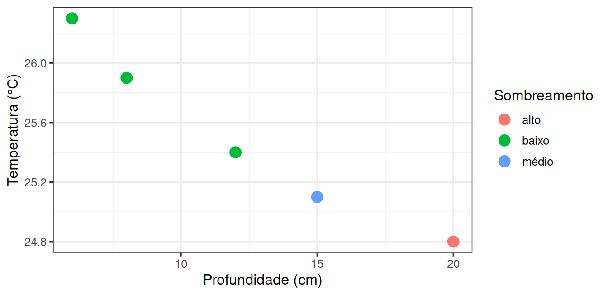
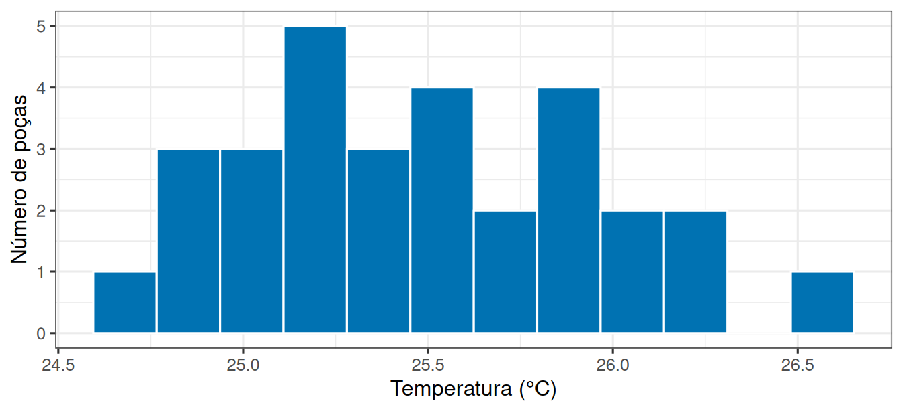

library(tidyverse)
theme_set(theme_bw(base_size = 12))Primeiras medições em R
Prática em R 01
1 Objetivo desta prática
A leitura desta semana apresentou uma tabela de poças de maré, a média, o desvio-padrão e o histograma das medidas. Você viu esses objetos prontos.
Hoje você vai construí-los. O objetivo é operar o R: guardar valores em objetos, montar uma tabela, resumi-la por grupo, desenhar um gráfico e pedir ao computador que gere novas medidas.
Ao final, você entrega um script com a sua própria tabela de poças e três simulações comparadas, acompanhadas de duas previsões que você registra antes de ver os resultados.
2 Preparação
Abra o RStudio, crie um script novo (File → New File → R Script), salve-o como pr-medicoes.R e comece por estas duas linhas:
A primeira carrega o conjunto de pacotes que usaremos o semestre inteiro. A segunda define a aparência dos gráficos, para não repetirmos isso depois.
Comece o script com um cabeçalho de identificação. Ele será exigido em todas as práticas do semestre:
# Prática em R 01 - Primeiras medições em R
# Nome:
# RA:
# Data:3 Guardar medidas em um objeto
Você mediu a temperatura da água em cinco poças de um costão e anotou: 25,4; 25,9; 24,8; 26,3; 25,1 °C.
No R, guardamos valores dentro de objetos. A seta <- faz essa atribuição e c() junta vários números em um vetor:
temperatura <- c(25.4, 25.9, 24.8, 26.3, 25.1)
temperatura[1] 25.4 25.9 24.8 26.3 25.1Note que no R o separador decimal é o ponto, não a vírgula.
Com o vetor criado, podemos perguntar coisas a ele:
length(temperatura)[1] 5mean(temperatura)[1] 25.5sd(temperatura)[1] 0.6041523length() conta quantos valores existem, mean() calcula a média e sd() mede o quanto os valores se espalham em torno dela.
4 Uma tabela: cada linha é uma poça
Na prática você não anota só a temperatura. Anota também a profundidade, o sombreamento, o identificador da poça. Para isso precisamos de uma tabela, em que cada linha é uma poça e cada coluna é uma característica medida nela.
pocas <- tibble(
poca = 1:5,
temperatura = c(25.4, 25.9, 24.8, 26.3, 25.1),
profundidade = c(12, 8, 20, 6, 15),
sombreamento = c("baixo", "baixo", "alto", "baixo", "médio")
)
pocas# A tibble: 5 × 4
poca temperatura profundidade sombreamento
<int> <dbl> <dbl> <chr>
1 1 25.4 12 baixo
2 2 25.9 8 baixo
3 3 24.8 20 alto
4 4 26.3 6 baixo
5 5 25.1 15 médio A saída mostra o tipo de cada coluna: <dbl> para números com casas decimais, <int> para inteiros, <chr> para texto. glimpse() dá a mesma informação de forma compacta:
glimpse(pocas)Rows: 5
Columns: 4
$ poca <int> 1, 2, 3, 4, 5
$ temperatura <dbl> 25.4, 25.9, 24.8, 26.3, 25.1
$ profundidade <dbl> 12, 8, 20, 6, 15
$ sombreamento <chr> "baixo", "baixo", "alto", "baixo", "médio"Três operações resolvem quase tudo no começo. filter() escolhe linhas, select() escolhe colunas e mutate() cria colunas novas:
pocas |> filter(profundidade > 10)# A tibble: 3 × 4
poca temperatura profundidade sombreamento
<int> <dbl> <dbl> <chr>
1 1 25.4 12 baixo
2 3 24.8 20 alto
3 5 25.1 15 médio O símbolo |> é o pipe: ele leva o valor da esquerda para o primeiro argumento da função à direita. Leia como “tome pocas, e então filtre”.
pocas |> mutate(diferenca = temperatura - mean(temperatura))# A tibble: 5 × 5
poca temperatura profundidade sombreamento diferenca
<int> <dbl> <dbl> <chr> <dbl>
1 1 25.4 12 baixo -0.100
2 2 25.9 8 baixo 0.400
3 3 24.8 20 alto -0.700
4 4 26.3 6 baixo 0.800
5 5 25.1 15 médio -0.400A coluna nova mostra quanto cada poça se afasta da média: valores negativos são poças mais frias que a média, positivos são mais quentes.
Para resumir por grupo, combine group_by() com summarise():
pocas |>
group_by(sombreamento) |>
summarise(
n = n(),
media = mean(temperatura),
desvio = sd(temperatura)
)# A tibble: 3 × 4
sombreamento n media desvio
<chr> <int> <dbl> <dbl>
1 alto 1 24.8 NA
2 baixo 3 25.9 0.451
3 médio 1 25.1 NA O desvio aparece como NA onde há uma única poça: não é possível medir espalhamento com um único valor. Guarde isso, porque você vai precisar decidir quantas poças colocar em cada grupo daqui a pouco.
Números resumem; gráficos revelam. Todo gráfico do ggplot2 tem três partes: os dados, o mapeamento entre variáveis e eixos (aes) e a forma de desenhar (geom_):
ggplot(pocas, aes(x = profundidade, y = temperatura, colour = sombreamento)) +
geom_point(size = 4) +
labs(x = "Profundidade (cm)", y = "Temperatura (°C)", colour = "Sombreamento")
Repare que as camadas do ggplot2 são somadas com +, e não com o pipe.
5 Quando o computador gera as medidas
Aqui entra a ferramenta que usaremos o semestre inteiro. A função rnorm() sorteia valores em torno de um centro, com um espalhamento que você define:
rnorm(5, mean = 25.5, sd = 0.6)[1] 25.44282 25.95393 26.05775 25.28516 25.00746Os três argumentos são explícitos: quantos valores gerar, qual a média e qual o desvio-padrão. Execute essa linha algumas vezes seguidas: cada execução produz cinco números diferentes, e é essa a ideia de “voltar ao costão e medir outras cinco poças”.
Agora vamos gerar trinta poças e olhar como elas se distribuem:
simuladas <- tibble(
poca = 1:30,
temperatura = rnorm(30, mean = 25.5, sd = 0.6)
)
ggplot(simuladas, aes(x = temperatura)) +
geom_histogram(bins = 12, fill = "#0072B2", colour = "white") +
labs(x = "Temperatura (°C)", y = "Número de poças")
Pedimos média 25,5 °C, mas a média das trinta poças sorteadas não sai exatamente 25,5. Para medir esse desencontro precisamos da distância entre o valor pedido e o valor obtido, sem que o sinal atrapalhe.
6 Sua vez
6.1 A sua tabela de poças
Monte a sua tabela, com seis poças inventadas por você, seguindo três regras:
- as temperaturas ficam entre 24 e 27 °C;
- a coluna
sombreamentousa apenas"baixo"e"alto", com pelo menos duas poças de cada; - as profundidades ficam entre 5 e 25 cm.
minhas_pocas <- tibble(
poca = 1:6,
temperatura = c(____),
profundidade = c(____),
sombreamento = c(____)
)6.2 Três cenários de simulação
Volte à simulação e monte três cenários diferentes entre si, combinando o número de poças e o desvio-padrão:
- o número de poças deve ser 30 ou 300;
- o desvio-padrão deve ser 0,6 ou um valor maior que 1 escolhido por você;
- pelo menos um cenário usa 300 poças e pelo menos um usa o seu desvio-padrão.
Para cada cenário, produza o histograma e calcule a distância até 25,5 com a linha do abs().
7 Entrega
Salve o script pr-medicoes.R com o cabeçalho de identificação preenchido. Antes de enviar, reinicie o R (Session → Restart R) e execute o script inteiro uma vez: se ele parar em alguma linha, corrija. As respostas escritas vão no próprio script, como comentários iniciados por #, logo abaixo da conta a que se referem.
8 Para saber mais
- Estrutura da linguagem R (MEAD) — procure a seção sobre atribuição de objetos e vetores, se quiser rever
<-ec(). - Gráficos em camadas com ggplot2 (MEAD) — procure
geom_histogram()para ajustar o número de barras do seu histograma.